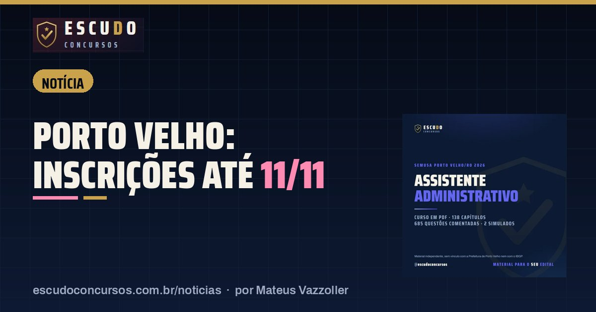

Concursos SEMUSA e SEMED Porto Velho: inscrições terminam 11/11 às 16h (horário de Rondônia)
NotíciaPublicado em 9 de novembro de 2026 · por Mateus Vazzoller, ESCUDO Concursos

Faltam três dias para se inscrever nos dois concursos da Prefeitura de Porto Velho organizados pelo IBGP: o da Saúde (SEMUSA, Edital nº 25/2026) e o da Educação (SEMED, Edital nº 24/2026). Nos dois, a inscrição vai até as 16h de quarta-feira, 11/11/2026, no horário de Rondônia (17h de Brasília), só pelo site do IBGP, e o boleto pode ser pago até 12/11/2026.
| Órgão | Prefeitura de Porto Velho/RO (Saúde e Educação) |
|---|---|
| Banca | IBGP |
| Inscrições | Até 11/11/2026, 16h de Rondônia (17h de Brasília) |
| Pagamento do boleto | Até 12/11/2026 |
| Taxa | R$ 105,00 (médio e técnico); R$ 130,00 (Professor SEMED) |
| Provas | SEMED em 06/12/2026; SEMUSA em 13/12/2026 |
O que muda até quarta-feira
Depois das 16h de 11/11 o sistema fecha. A inscrição só vale com o boleto pago até 12/11, e o edital da SEMUSA não aceita Pix, transferência, depósito em conta nem cheque: o pagamento é do boleto, na rede bancária. A segunda via do boleto pode ser emitida até as 17h de 12/11. O pedido de isenção da taxa já passou nos dois concursos: foi de 13/10 a 15/10/2026.
SEMUSA: Assistente Administrativo e Técnico em Enfermagem
O concurso da Saúde tem 92 cargos e 2.248 vagas, das quais 641 imediatas. Para quem quer trabalhar nas unidades de saúde da capital, os cargos de nível médio mais procurados são o Assistente Administrativo (243 vagas, R$ 1.831,91) e o Técnico em Enfermagem (209 vagas, R$ 1.397,16), com taxa de R$ 105,00. Na SEMUSA é permitido se inscrever em mais de uma lotação do mesmo cargo, pagando a taxa de cada inscrição. A prova é em 13/12/2026, à tarde.
SEMED: Professor Séries Iniciais
No concurso da Educação, o Professor Nível II, Séries Iniciais tem 330 vagas (165 imediatas), vencimento de R$ 3.847,97 por 30 horas e taxa de R$ 130,00. Aqui a regra é outra: só vale uma inscrição, numa única lotação, e a última feita anula as anteriores. Escolha com cuidado entre a área urbana e as escolas rurais. A prova é em 06/12/2026, de manhã. O que cai está no guia da SEMED.
Datas principais
| Etapa | SEMUSA | SEMED |
|---|---|---|
| Fim das inscrições | 11/11/2026, 16h (Rondônia) | 11/11/2026, 16h (Rondônia) |
| Último dia para pagar o boleto | 12/11/2026 | 12/11/2026 |
| Prova objetiva | 13/12/2026 (tarde) | 06/12/2026 (manhã) |
Os dois editais chamam o cronograma de preliminar, e as datas podem mudar por comunicado do IBGP. Confira a página de cada concurso no site da banca antes de pagar.
Curso ESCUDO Assistente Administrativo da SEMUSA Porto Velho em PDF: 138 capítulos e 685 questões comentadas, 2 simulados no formato da prova, de acordo com o edital. De R$ 47 por R$ 37 com o cupom ASSISTENTE37 até 11/11/2026.
Ver o curso
Perguntas frequentes
Até quando vão as inscrições dos concursos SEMUSA e SEMED Porto Velho?
Até as 16h de 11/11/2026, no horário de Rondônia, que equivale às 17h de Brasília. O boleto pode ser pago até 12/11/2026.
Posso pagar a taxa por Pix?
Não. O edital da SEMUSA aceita só o boleto bancário, pago na rede bancária, e recusa Pix, transferência, depósito e cheque.
Ainda dá para pedir isenção?
Não. O pedido de isenção dos dois concursos foi de 13/10 a 15/10/2026.
Leia também
- NotíciaDPE-PB Técnico da Defensoria: inscrições terminam sexta-feira, 13/11, às 23h59
11 de novembro de 2026 · Concurso DPE-PB: inscrições para Técnico da Defensoria terminam em 13/11/2026, às 23h59, no site da FCC. Boleto de R$ 103,00 pode ser pago até 16/11.
- NotíciaPC-PE Agente de Polícia: pedido de isenção da taxa termina em 12/11, às 18h
10 de novembro de 2026 · Quem quer ser Agente da Polícia Civil de Pernambuco sem pagar os R$ 250,00 da taxa tem até 12/11, às 18h de Brasília, para pedir isenção no Cebraspe.
- NotíciaPC-AC Oficial Investigador: inscrições abrem em 11/11, e a isenção dura só dois dias
10 de novembro de 2026 · Inscrições do concurso PC-AC para Oficial Investigador abrem em 11/11 no IDECAN. Isenção só em 11 e 12/11, taxa de R$ 105,00 e prova em 24/01/2027.
Guia completo do concurso: edital, vagas e o que cai · Mais notícias e dicas de concursos